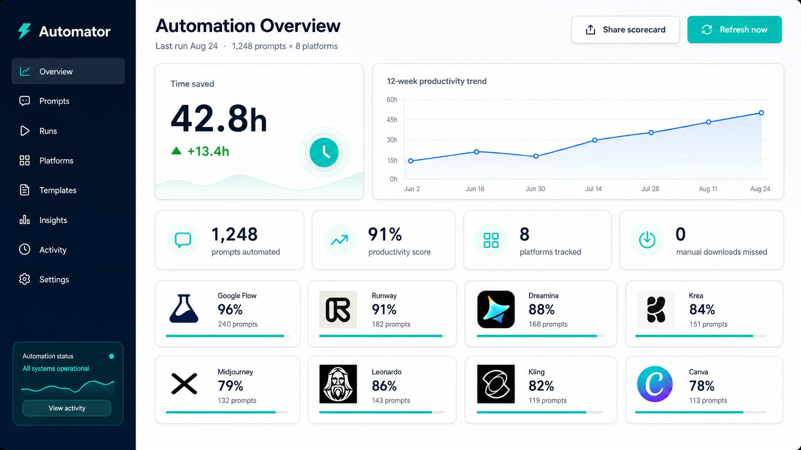
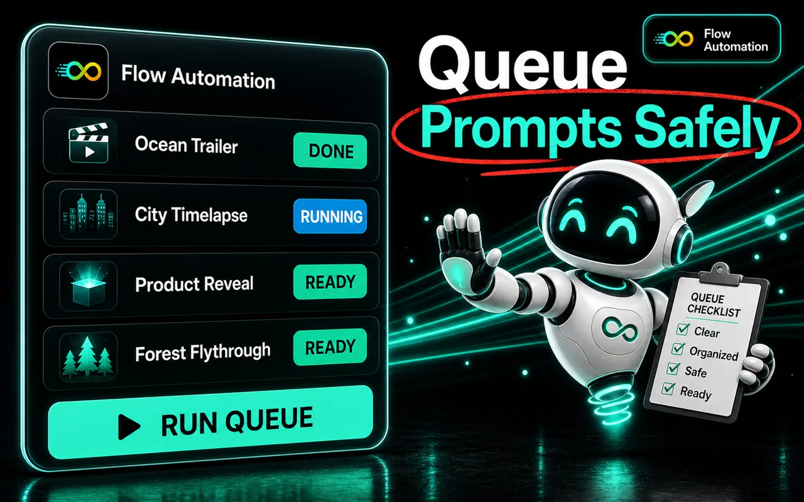
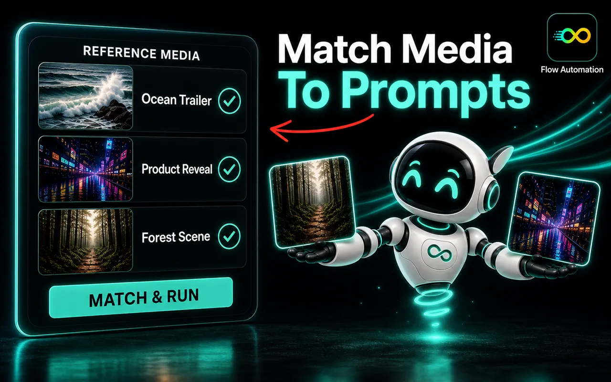
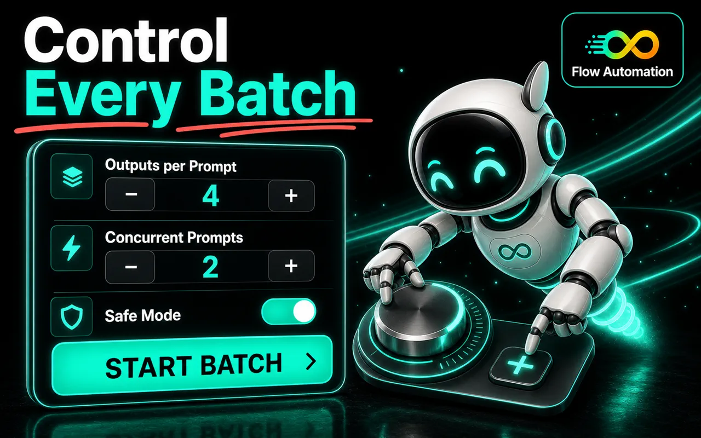
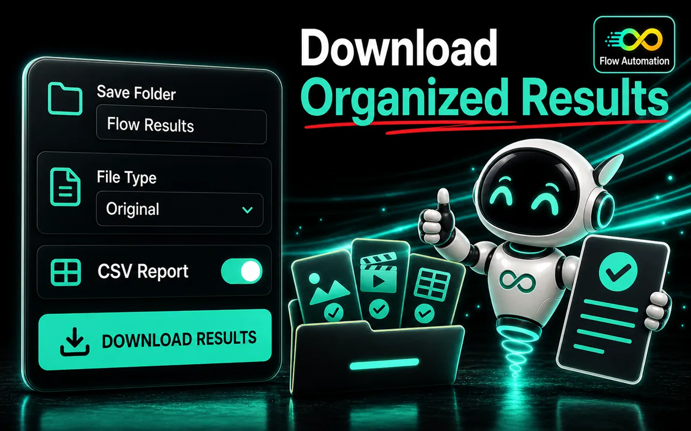

Text to Video
Queue written prompts and let Flow render each one while you keep editing.
- Repeat runs per prompt for variation pulls
- Per-row aspect and duration notes stay attached
- Built for b-roll, backgrounds, and mood shots
Paste your shot list, pick a workflow, and the extension queues, paces, retries, and downloads every generation — inside the Flow session you already have open. No API keys, no scripts, no setup.
Join 1,000+ creators using Deepak Thapa's automation extensions

Every Flow creation mode that benefits from batching, driven from the same queue.
Queue written prompts and let Flow render each one while you keep editing.
Animate between a start and end frame. Upload frame sets once; the extension pairs them per row.
Feed reference images — characters, locations, styles — and batch prompts against them.
Pacing, retries, naming, and filing are where batches eat your evening. That is what the extension takes over.
Bring prompts from Sheets exports, .csv files, or plain text. Rows map straight into the queue.
Control how fast shots submit, with optional randomized spacing that keeps batches human-paced.
Blocked or failed starts get retried instead of silently dying. A reconciliation pass chases unresolved outputs.
Outputs land in a folder you name, with prompt-based filenames and optional numeric order prefixes.
Every batch ends with a report: what ran, what retried, what downloaded, and what needs another pass.
A readable log of every click, wait, and download — copyable for debugging when a shot misbehaves.
Four steps, one side panel. The extension handles the clicking, waiting, and downloading in between.
Paste prompts directly or import a spreadsheet, .csv, or text file. Each row becomes a queued shot with its own settings — no reformatting, no manual re-entry.

Pick Text to Video, Frames to Video, or Ingredients to Video on the Flow project you have open. The extension mirrors the mode you select and matches reference images to prompts by filename.

Start the batch and let the panel pace submissions, respect random delays, and retry failed starts automatically. A live action log shows exactly what happened on every shot.

Finished generations auto-download into a named folder with prompt-based filenames and optional numeric prefixes. A .csv run report records what succeeded, what retried, and what needs another pass.

Flow Automation works inside the Flow tab and session you open yourself. It never sees your Google password, and your prompts never leave your machine for a third-party server.
No. Flow Automation is an independent browser extension by Deepak Thapa. It is not affiliated with, endorsed by, sponsored by, or officially connected to Google, and it is not an official Google Flow product. You are responsible for following Flow's terms, policies, and fair-use requirements.
No. That is the point of the extension. Open a Flow project in your browser, open the side panel, import your prompts, and run the queue. No API keys, scripts, command-line tools, or coding workflow required.
No. You use your own Google account and your own Flow access. The extension does not provide accounts, subscriptions, or credits, and it does not bypass Flow limits, moderation, or fair-use policies. Generation success is controlled by Flow, not by the extension.
Text to Video, Frames to Video (with adjacent or grouped start/end frame pairing), and Ingredients to Video (with prompt-to-reference-image matching). You can also queue more work while a batch is running.
The Chrome listing is live on the Chrome Web Store, and other Chromium-based browsers such as Brave, Arc, and Opera can install the same build. A signed Microsoft Edge listing is still in review. Firefox is not supported: Flow requires trusted browser input that the extension can only produce on Chromium.
Everything runs locally. Prompts and queue state stay in extension storage on your machine, generations happen inside your own Flow session, and finished files download through your browser into the folder you named. See the privacy policy for details.
Live on the Chrome Web Store, and installable on any Chromium browser. The Edge listing is still in review — join the waitlist and you will get the link the moment it lands.
Independent extension · Not affiliated with Google